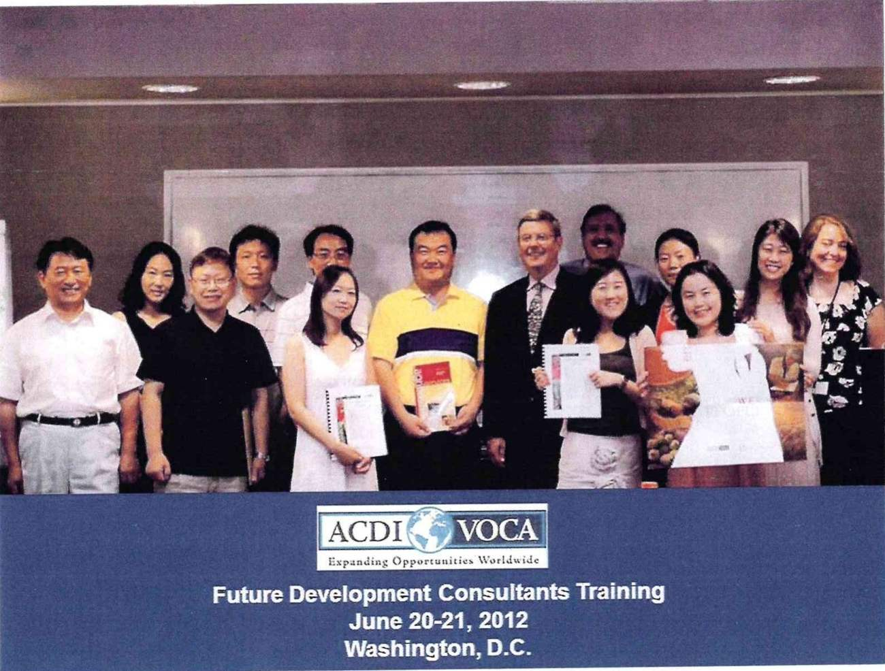
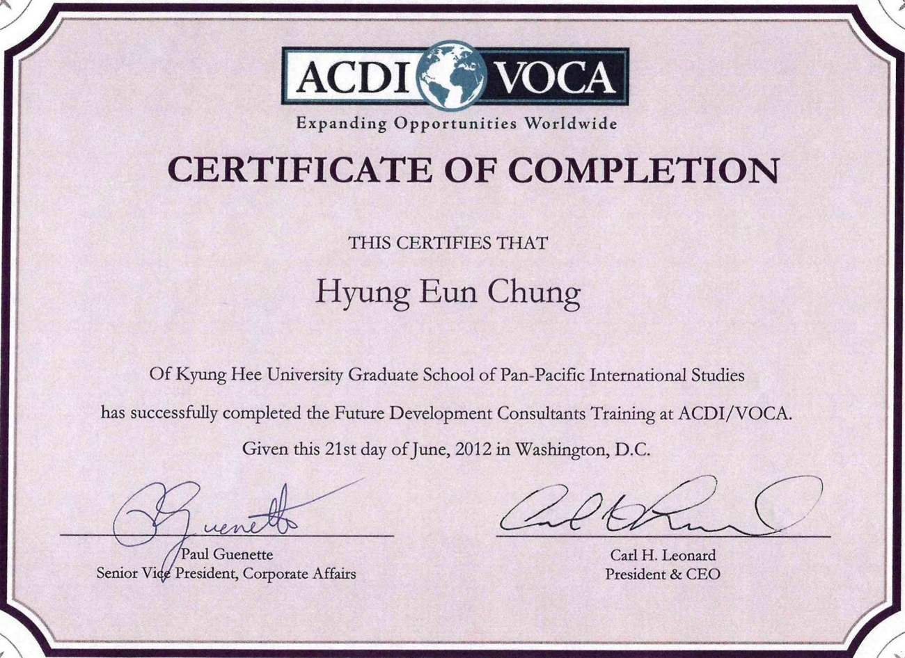
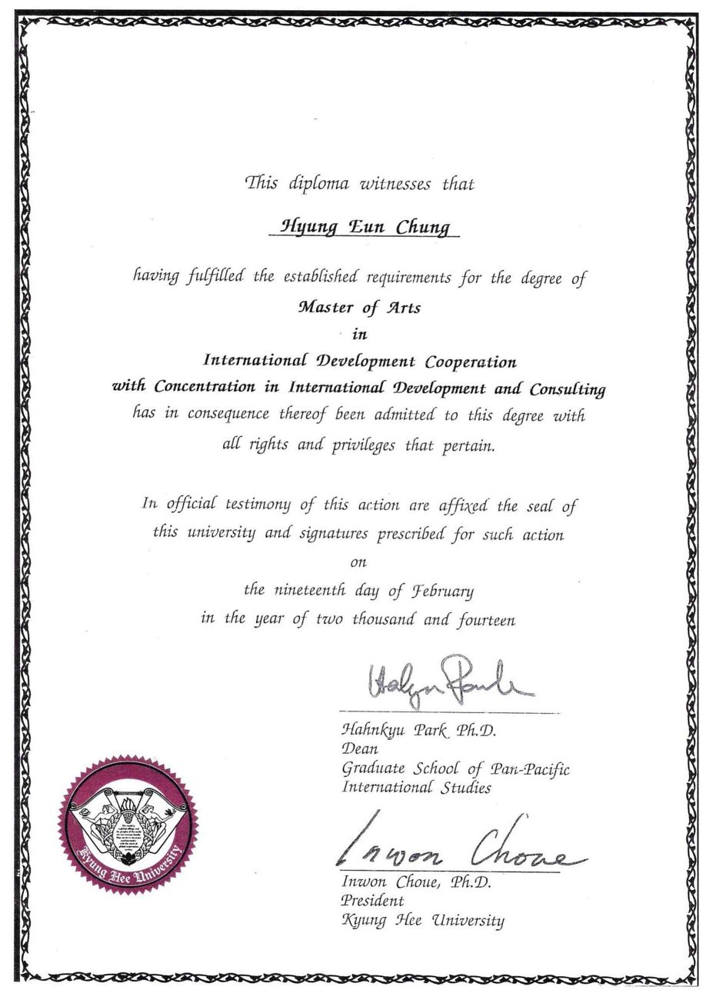
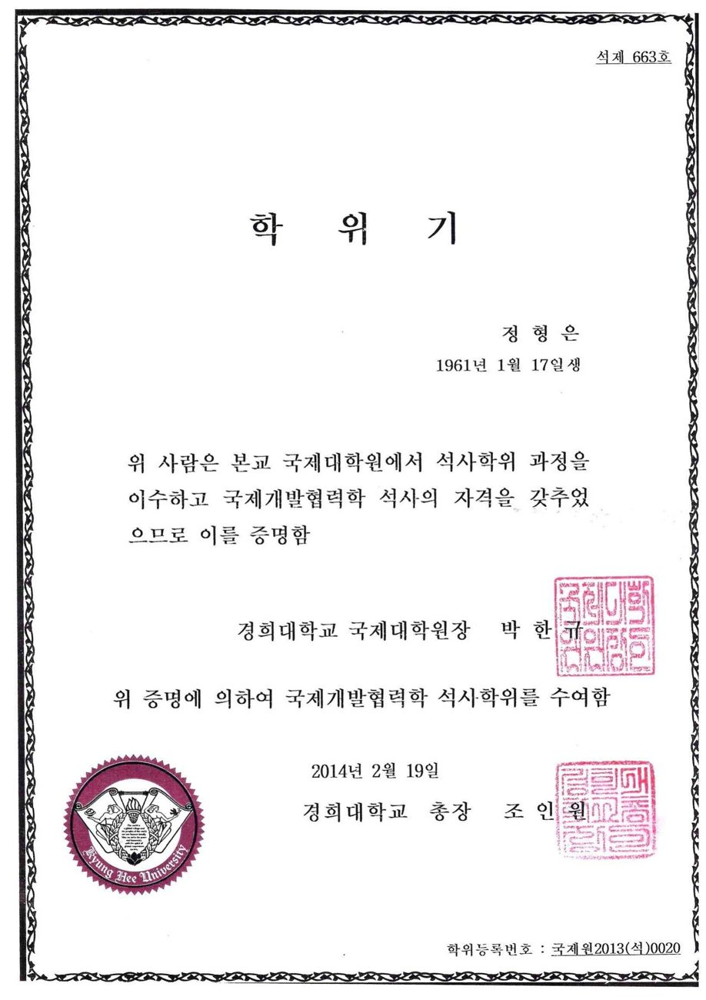

Education
The first qualification was the trade’s own: navigation and maritime officer certification from Mokpo National Maritime College, 1979 to 1981, followed by a B.B.A. in business administration from Korea National Open University taken alongside working years.
The second came much later. After a decade of running government relief and ODA logistics, I wanted the policy side of the work I had been executing, and took a Master of Arts in International Development Consulting at the Graduate School of Pan-Pacific International Studies, Kyung Hee University, from 2012 to 2014.
Part of that programme was the Future Development Consultants Training run by ACDI/VOCA in Washington, D.C. on 20–21 June 2012 — the first time I had looked at relief and development logistics from the donor’s side of the table rather than the carrier’s.
In 2015 I completed the China Advanced Management Program (CHAMP) at the Graduate School of International Studies, Seoul National University.



